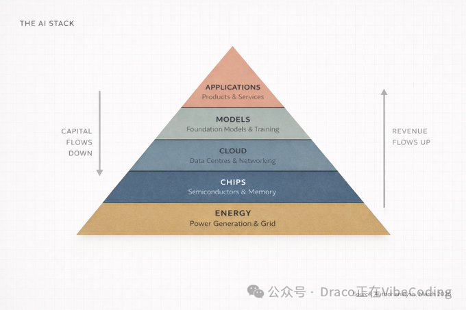
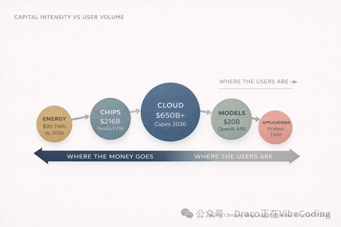
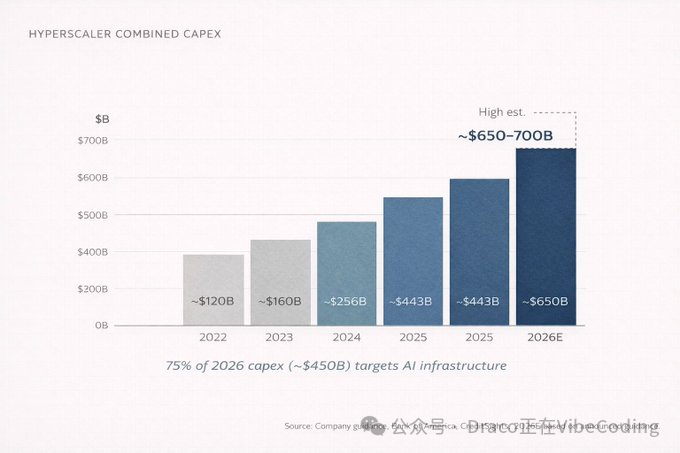
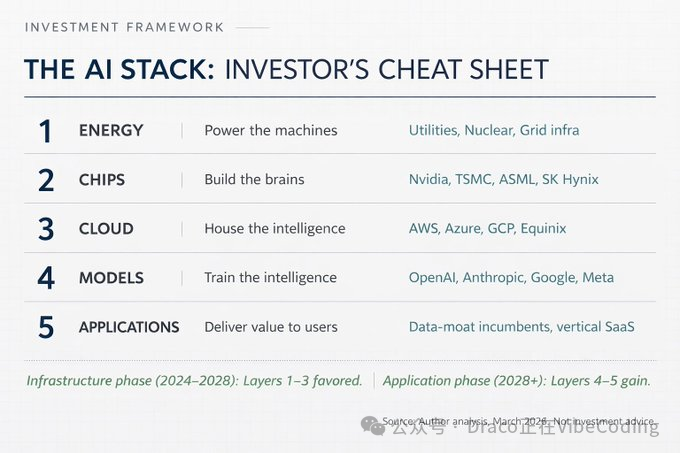
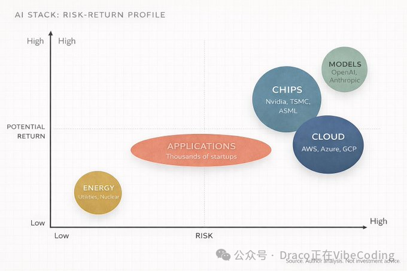

AI 五层价值链：收入往上走资本往下走，钱在大多数人看不见的基础设施层
最近在同时做几个有趣的产品和项目，不过都没搞完，今天水一篇译文吧：把AI的价值链条拆解清楚了，大家也可以看看，自己在这个价值链条里是否有位置，如果有，位置又在哪里。

原文：https://x.com/AnishA_Moonka/status/2033128021092073502作者：AnishA_Moonka (@AnishA_Moonka)
你打开ChatGPT，让它帮你改封邮件，它还真能改。感觉像变魔术一样。然后你就觉得自己懂AI了。
但你想想，这就像你在餐厅刷了信用卡，就觉得自己懂了Visa是怎么赚钱的——你只不过用了个产品，根本没看到背后那套系统。
去年我花了大半年时间研究AI的钱到底流向哪里，说实话，费了好大劲才意识到自己一直看错了地方。我老盯着ChatGPT、Claude、Gemini这些你能摸到的东西，与此同时，7000亿美元正悄悄砸进我连名字都叫不上的基础设施里。我听都没听过的芯片。听起来像瞎编的缩写代表的封装技术。冷却系统。发电厂。德克萨斯、爱荷华、印度海得拉巴，混凝土正在那里一桶一桶地浇。
一年前我认识的人没一个聊这些的。现在他们开始聊了。
这篇文章会很长。如果你现在没时间，先收藏了回头再看。我想带你完整走一遍整个AI产业链，从数据中心的电到你手机上的App，每一层都讲到。而且我保证，就算你没看过财报也能听懂。
我会把术语给你掰扯清楚。每个观点都配上真实数据。我还会老实交代我搞不懂的地方，因为确实有一些。
咱们开始吧。
AI是基础设施。就像互联网，就像电力，它需要工厂。 ~ 黄仁勋
大多数人理解AI，大概就是这样的：一台聪明的电脑回答问题。
这就像说互联网是"一个看视频的地方"。技术上没错，但完全没抓到重点。
英伟达CEO黄仁勋在2026年1月的达沃斯论坛上，把AI描述成一个五层系统：能源、芯片、云、模型、应用。他把这整套东西称为"人类历史上最大规模的基础设施建设"。
仔细品品这个词：基础设施。道路。电网。自来水。这些是让社会运转的东西，平时没人去想，直到坏了才想起来。AI正在成为这种东西：看不见、少不了、建起来贵得吓人。
我把它叫AI技术栈。五层，一层叠一层，每一层养活上一层，钱在两个方向流。
这是我能给你的最简单版本：
1.
能源。你需要电来驱动计算机。大量的电。
2.
芯片。你需要专门的处理器来做计算。这不是你笔记本里那种芯片。
3.
云。你需要装满这些芯片的巨大仓库，用快得离谱的网络连接起来。
4.
模型。你需要真正强大的AI，那个从数据里找规律的"脑子"。
5.
应用。你需要人们真正用的产品。ChatGPT、谷歌搜索、你银行的 fraud 检测系统。
所有只盯着第5层聊AI的，都漏掉了其他画面。
如果你是做投资的、创业的人，或者单纯想知道世界往哪走，这里有个关键：钱在这几层里不是均匀分布的。它会集中。它会滚雪球。而现在，它正集中在大多数人没在看的那些地方。

绝大多数人的注意力都跑到应用层去了。ChatGPT、Copilot、Claude、Perplexity。这些是你能摸到的东西，所以你觉得这就是全部。
但所有人都在漏掉的是：
2026年，四大云厂商（亚马逊、微软、谷歌、Meta）预计要砸6500亿到7000亿美元。合起来。一年。这大概相当于瑞士一整年的GDP。而其中将近75%，约4500亿美元，会直接砸进AI基础设施。
不是砸给聊天机器人。不是砸给App。是砸给建筑、芯片、线缆、冷却系统。
没人在酒局上聊这些东西。但这就是钱真正在的地方。
因为你想啊，在任何人能用上ChatGPT之前，得有人先建一个购物中心那么大的数据中心，往里塞几万颗专用处理器，用比大多数公司还值钱的网络设备把它们连起来，然后每天喂给它足够供应一个小城市的电。
那是第1层到第3层。看不见的层。真正的大钱正在砸进去的层。
"那OpenAI呢？他们不是在赚几十亿吗？"
确实。OpenAI在2025年底达到了200亿美元年收入，一年前才60亿，再之前才20亿。两年时间从20亿干到200亿，10倍增长。历史上从没有公司从这个体量起步，增长还能这么快的。
但问题来了。OpenAI在2025年烧了大概90亿美元现金，预计2026年要烧170亿。他们的运行成本（就是你问AI问题时实际算答案花的钱）2025年达到84亿，预计2026年会达到141亿。他们预计要到2029或2030年才能真正开始赚钱。
那这些烧掉的钱去哪了？
它往下流过整个技术栈。流向微软Azure（OpenAI要给微软交总收入的20%，一直交到2032年）。流向英伟达买芯片。流向建数据中心和配设备的公司。流向发电的电力公司。
如果你盯着看久了，会发现这里面有点循环的意思。微软投资OpenAI。OpenAI把钱花在Azure上。Azure用这笔收入买更多英伟达芯片。英伟达财报创纪录。大家欢呼。钱继续往下流。
大多数用户站在技术栈最上面。大多数利润藏在最底下。这种脱节就是整个投资逻辑的核心。
这是AI价值链的第一课：收入往上走，资本往下走。

人类所有的问题都是工程问题，而工程问题都能解决。 ~ Buckminster Fuller
如果你想搞懂AI正在发生什么，去看看1880年到1920年之间电力发生了什么。
1882年，托马斯·爱迪生在曼哈顿珍珠街建了第一个商业发电站。当时人们觉得电就是个新鲜玩意儿。一种花哨的照明方式。煤气灯明明用得好好的，谁需要这个？
40年内，电力把地球上每个行业都翻了个底朝天。制造业、交通运输、通讯、医疗、娱乐。赢家不是发明灯泡的那些人。而是建发电厂、铺铜线、造发电机的那些公司。
通用电气、西屋电气、电力公司、铜矿商、建筑商。
同样的剧本正在AI领域上演，只是时间从几十年压缩到了几年。
AI → 数据中心 → 芯片 → 原材料 → 能源
电力 → 工厂 → 机器 → 原材料 → 煤炭/水
这个推进的逻辑几乎一模一样。而且赢家，又一次，主要不在应用层。他们在基础设施层。
我把它叫做"卖铲子定律"。每次新的计算平台出现时，最初的财富都发生在"卖铲子的人"手里。应用后来才出现。应用抢走了所有头条。但基础设施拿走了所有利润。
英伟达2026财年（截至2026年1月）全年营收2159亿美元，同比增长65%。仅数据中心业务在最后一个季度就干了623亿，同比增长75%。这一个业务线现在占英伟达总营收的91%以上。想想：一个季度680亿美元，其中90%以上都来自同一个业务线。
台积电，那个实际生产英伟达芯片（以及几乎所有其他人的芯片）的公司，在2025年拿下了全球代工市场近70%的份额，销售额1225亿美元。最近的竞争对手三星只有7.2%。这种统治力，当年的标准石油看了都得冒汗。
基础设施总是先赢。问题是这窗口还能开多久。
你问任何人互联网革命是关于什么的，他们会说谷歌、亚马逊、脸书。但你问早期的钱到底是在哪里赚的，答案是思科、康宁和那些铺光纤的公司。同样的故事。不同的十年。
股市是把钱从急躁的人手里转移到耐心的人手里的装置。 ~ 查理·芒格
我得老实交代一件事。当我最初开始以投资者身份关注AI时，我犯了和大多数人一样的错误。
我看了应用层。我看到ChatGPT在增长。我看到Anthropic在融到几十亿。我想：AI公司会赢，所以投AI公司。
三件事改变了我的想法。而且是一件接一件发生的，这点很重要，因为每一件都建立在上一件的基础上。
第一，我注意到几乎每个"AI公司"都在大出血。OpenAI、Anthropic、Mistral、xAI。烧钱速度超过赚钱速度。不是因为生意不好，而是因为算力成本是硬性的。每次你问AI一个问题，生成答案都要花真金白银。而且模型越聪明，需要的算力越多，运行成本就越高。
你以为是"AI赢家"的那些公司，实际上才是花钱最多的。
第二，我意识到基础设施公司在以我从谷歌早期以来就没见过的利润率疯狂印钞。英伟达的毛利率维持在75%左右。台积电一边扩产能一边涨价，因为需求远远超过供给。这些公司没有"什么时候才能赚钱"的问题。他们有"我们建得根本不够快"的问题。这两种问题是完全不一样的。
第三，也是让我不舒服的一点：我意识到自己一直是用消费者思维在看AI，不是工程师思维。消费者看到App。工程师看到技术栈。
一旦你看到了技术栈，你就再也回不去了。
每个AI公告都变成了"我们要砸多少钱"的公告。每个模型改进都变成了芯片订单。每个新功能都变成了数据中心租约。整个行业开始看起来像一系列同心圆，你越往中心走，利润就越集中。
所以，也许你是个一直在关注AI模型的程序员。也许你是个300美元买了英伟达股票、正在想接下来买什么的散户。也许你是个在印度远远看着这场革命的旁观者，想知道这和你投资组合有啥关系。
（或者你三者都是，那挺有意思的。）
无论你在哪里，道理都是一样的。消费者看到产品。投资者看到供应链。最厉害的投资人在产品还没发货之前就看到了供应链。
当然，这些都是事后看才显得整整齐齐的。其实根本不是。我在这问题上来来回回纠结了好几个星期。我得忘掉很多以前做SaaS投资时的经验，那时候大部分价值都堆在应用层。我一直想找"下一个OpenAI"，而我其实应该看看OpenAI在开支票给谁。AI和SaaS在结构上是不同的。计算需求如此巨大，以至于基础设施层吞掉了更多价值，至少在这个阶段是这样。
理解技术栈会改变你读每条新闻的方式。改变你看每个公司的角度。改变你配置资金的方式。
我会写更多这样的内容。关于投资、AI、以及财富实际如何流动的深度分析。如果你不想靠算法给你推下一篇，最好的办法是关注我并打开通知。
好了，这篇越来越长了，我要加速了。以下是AI技术栈每一层的详细拆解：那里在发生什么、谁是关键玩家、机会在哪里。
坚持住。
第1层：能源
AI数据中心是吃电怪兽。一次大型AI训练消耗的电量，相当于一个小城镇一年的用电量。这些设施预计到2026年每年要吃掉约900亿千瓦时的电，大概是2022年水平的10倍。
这创造了一个直接的投资逻辑：谁能发电、输电、把可靠的电力送到数据中心，谁就能受益。核能、天然气、可再生能源公司，特别是那些靠近主要数据中心集群的。有多余产能的电力公司。建电网基础设施的公司。
黄仁勋在2025年10月说得直白："数据中心自己发电可能比连上电网快得多。"公司已经在建直连数据中心的专用发电设施，完全绕过电网。这让我挺意外的。这些科技公司基本上在变成自己的电力公司。
谁受益：电力公司（特别是有核电的）、独立发电商、生产变压器、开关设备和其他电力设备的公司。在印度，随着超大规模数据中心园区在亚洲扩张，电力设备和输电领域的公司也会受益。
第2层：芯片
这是大多数人听说过的层，因为英伟达。但它比一家公司复杂得多。
芯片层有自己的子层，每层竞争格局都不同。最上面是设计者，那些画芯片图纸的公司：英伟达（GPU）、AMD（GPU和CPU）、博通（定制ASIC）、高通，以及越来越多自己下场的大厂（谷歌的TPU、亚马逊的Trainium、微软的Maia）。然后是制造商。台积电主导制造，占全球代工市场近70%的份额。三星是第二，7.2%。英特尔在重建其代工业务，但这是多年的项目，结果没保证。
然后是设备层，那些造芯片制造机器的公司。ASML是全球唯一能生产最先进芯片所需极紫外光刻机的公司。应用材料、泛林集团、东京电子紧随其后。再往下是内存（AI模型需要海量高带宽内存，SK海力士、三星、美光是三家关键玩家）和封装（台积电的CoWoS等先进芯片封装已经成为真正的瓶颈）。
这里的集中度让我反复琢磨。英伟达估计占有AI数据中心GPU市场92%的份额。台积电为英伟达、AMD、博通、高通、苹果和几乎所有其他主要芯片设计者制造芯片。ASML是全球唯一的EUV光刻机供应商。
一家公司设计。一家公司制造。一家公司造那台制造的机器。这种集中度既是一个投资机会，也是一个地缘政治风险。我觉得没多少人同时把这两个想法放在一起想。
第3层：云和数据中心
这是芯片住的地方。巨大的仓库级设施，塞满服务器，用高速网络连接，用越来越精密的热管理系统保持冷却（液冷正在成为标配，不是可选项）。
市场由三大云厂商主导：亚马逊云科技（31%市场份额）、微软Azure（24%）、谷歌云（11%）。甲骨文也在拼命扩张这个领域，2026年砸钱目标500亿美元。
但云层比这几家大厂深得多。富士康（鸿海）现在组装全球约40%的AI服务器。Arista Networks和Credo Technology（其股票在2025年因能效数据传输上涨117%）建连接一切的网络基础设施。Vertiv做液冷。数据中心REITs如Equinix和Digital Realty拥有土地和建筑。甚至得有人去浇混凝土。每层都有自己的供应链。
据美银估计，超大规模云厂商2026年将把90%的经营现金流花在砸钱建东西上。这比2025年的65%还高。摩根士丹利预计这些公司今年将借超过4000亿美元来资助这场建设，是2025年1650亿美元的两倍多。我第一次看到这个数字时愣住了。一年发债4000亿，就为了建计算机仓库。

第4层：模型
这是"大脑"层。那些训练和构建真正AI模型的公司。
大玩家：OpenAI（GPT系列，200亿+美元年收入）、Anthropic（Claude，据报道2026年初年化收入约190亿美元）、谷歌DeepMind（Gemini）、Meta AI（Llama，开源）、Mistral、xAI（马斯克的公司，正在搞Grok）。
这一层让我着迷，因为它同时是最被炒作的和最没利润的。OpenAI的收入增长速度前所未见，但它在2026年将烧掉170亿美元现金。Anthropic增长很快，但严重依赖不断融资（2026年初 reportedly 在1700亿美元估值融了50亿）。
商业模式问题是结构性的：模型在你花更多钱在算力上时会变好，但那笔支出增长得比收入快。这就像开餐厅，每道菜都需要比上一道更贵的食材，但顾客希望价格保持不变。利润一直被压着。我不知道这什么时候会改变。也许永远不会。
对投资者来说，这一层是高风险高潜在回报。这些公司大多是私人的。你在公开市场能沾边的，主要来自托管它们的云厂商（微软拥有OpenAI的大量股份，并在Azure上运行其计算）和训练时消耗其产品的芯片公司。
第5层：应用
这是你每天看到的层。ChatGPT。由Gemini驱动的谷歌搜索。Office里的微软Copilot。你银行的AI fraud 检测。网飞推荐。你手机的照片增强。
应用层是最广、最拥挤的。成千上万的初创公司和行业巨头在这里建设。它最终会成为按市场总规模计算最大的一层（一些估计到2030年代初会超过2万亿美元），但现在它也是利润率最薄、谁能赢的不确定性最大的一层。
这一层的差异化在于数据。拥有独特专有数据的公司将建立持久优势。Salesforce有企业CRM数据。彭博有金融数据。Epic有医疗记录。坐拥这种专有数据护城河的公司，可以用通用聊天机器人做不到的方式调教AI模型。
对投资者来说，应用层是最大机会最终所在的地方，但也是大部分资本会被毁灭的地方。大多数AI初创公司会失败。活下来的那些会快速滚雪球。
未来3到5年最好的打法大概是这样的：现在投基础设施，以后投应用。 最聪明的资本已经这么配置了。
真正会在第5层赢的公司，是那些坐拥别人搞不到的数据的公司。而且他们大多数甚至还不叫自己AI公司。


投资者的首要问题，甚至是最坏的敌人，很可能就是他自己。 ~ 本杰明·格雷厄姆
让我直接面对房间里的大象。
"那互联网泡沫呢？这不是一回事吗？大规模基础设施支出、没有利润、所有人都被炒作冲昏了头？"
公平的问题。值得认真回答。
区别在这里。在互联网泡沫时代，公司在为还没出现的需求建基础设施。他们在为还在拨号上网的用户铺光纤、买服务器。基础设施建好了，需求5到7年后才出现，中间的一切都被清算了。
到2026年，AI需求已经在这里了。英伟达芯片造都造不及。台积电的先进封装产能全排满了。云计算租赁价格在涨，没在跌。仅2025年3月到10月，OpenAI就增加了4亿周活用户。模型在被使用。算力在被消耗。客户在付钱。
这并不意味着没有风险。风险巨大。而且我比我想承认的更经常思考它。特别是三件事：
第一，钱砸错了地方。 公司2026年在数据中心上要砸6500亿+。如果AI服务的收入不够快出现以证明这笔支出合理，一些公司将面临严重的利润压缩。亚马逊的自由现金流今年可能真的会转负。那可是亚马逊。基本上发明了云计算的那家公司。
第二，集中度风险。 AI供应链太集中了。台积电制造全球近70%的芯片。ASML是EUV机器的唯一供应商。英伟达设计92%的AI数据中心GPU。任何意外（地缘政治、自然灾害、竞争）都可能波及整个技术栈。新竹一次地震就可能让全球AI发展倒退几年。这个想法应该让你不舒服。
第三，DeepSeek问题。 2025年1月，中国AI实验室DeepSeek发布了一个模型，用一小部分训练成本就接近了顶级水平。这挑战了"砸更多钱就等于更好的AI"这个假设。如果开源和高效模型继续缩小差距，基础设施支出逻辑就会动摇。我不认为DeepSeek杀死了这个逻辑。但它引入了一个以前不存在的变量，而且这种变量不会自己消失。
但我不断回到这个框架。麦肯锡估计到2030年全球数据中心累计投资可能达到6.7万亿美元。普华永道估计AI到2030年可能为全球GDP贡献15.7万亿美元。IDC预计AI解决方案和服务到2030年将产生22.3万亿美元的累计影响。
即使这些数字错了50%，我们仍然在说自互联网以来最大的技术驱动的经济转移。问题是规模多大，不是方向对不对。
我一直听到有人说"我对AI持怀疑态度"，好像这是个立场。行。怀疑模型。怀疑时间线。但别对供应链无知。这是两回事。一个是健康的思考方式。另一个会让你亏钱。
五年后，赢得这个周期的名字会感觉理所当然。历来如此。现在的游戏是在其他人赶上之前看到这个结构。
把AI想象成一个有五层的游戏，一层叠一层。
第1层（能源）是新手村。必不可少、不风光、玩了几乎不可能输。低风险，稳定回报。把这些当成永远不死但总给奖励的任务发布者。
第2层（芯片）是Boss战。权力最集中，利润率最高，但也是最暴露于干扰和地缘政治风险的一层。回报巨大，但难度是地狱模式。
第3层（云）是多人服务器。人人都在这玩。超大规模云厂商是服务器管理员。他们从所有东西里抽成。
第4层（模型）是竞技场。残酷竞争、快速创新，大多数玩家被淘汰。只有装备最好的才能活下来。
第5层（应用）是开放世界。无限可能，但没有保底的战利品。你得自己找任务。
核心策略很简单。你不必玩全部五层。大多数人试图玩第5层，因为它最显眼。聪明的钱正在第2层和第3层刷经验，因为那是现在经验值最高的地方。
你在技术栈中的位置，决定了你应该关注什么。
对非技术人士：你不需要懂GPU是怎么工作的。你需要懂必须有人制造它们，必须有人存放它们，必须有人给它们供电。而这些"某人"是上市公司，有你可以读的季度财报。
对技术人士：你已经知道模型在变好。你可能低估的是物理限制（电力、冷却、芯片封装）正在成为真正瓶颈的速度。未来十年的AI进步，将在工程上决出胜负，而不是在论文里。
对投资者，AI价值链是五个叠在一起的交易，每个都有不同的风险回报比、不同的时间线、不同的赢家组合。把"AI"当成一个行业来对待，就像1998年把"科技"当成一个行业来对待一样。"AI"内部最好和最坏结果的差距是巨大的。
这不会永远持续。在某个时刻，基础设施建设会成熟。应用层会整合。价值会像互联网那样向上转移。亚马逊、谷歌、脸书（互联网时代的应用层）最终比光纤电缆公司和服务器制造商捕获了更多价值。
但我们在AI上还没到那一步。我们在基础设施阶段。卖铲子阶段。而铲子在疯狂印钞。
理解完整技术栈的人会提前看到转移。其他人会一次又一次地对钱实际去哪感到惊讶。
十年后，理解AI技术栈会像理解资产负债表一样基础。
学技术栈。摸清各层。跟着资本走。
这就是这场游戏。